Префектура Оита · Усуки · ремёсла
Усуки-яки: белый фарфор, который вернули в Усуки через двести лет
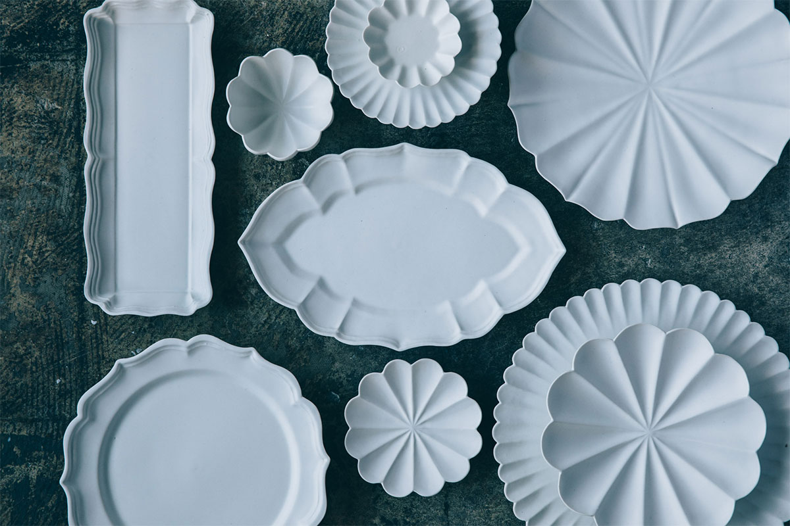
Усуки рано принял буддизм, а в XVI–XIX веках был оживлённым торговым городом. В его истории есть и керамика, о которой два века никто не вспоминал. Сегодня белый фарфор усуки-яки снова делают в городе, и его можно не только купить, но и попробовать сделать самому.
История
Печь для княжеского двора
Гуляя по Усуки, город в префектуре Оита на побережье пролива Бунго, рано или поздно замечаешь на холме башни замка. Его построил в XVI веке Сорин Отомо, правитель этих земель, принявший христианство. Позже замок перешёл к роду Инаба, и князья Инаба правили Усуки вплоть до отмены княжеств в 1871 году.
В конце эпохи Эдо, около двухсот лет назад, при княжестве открыли собственную печь, и так появилась усуки-яки. Мастерская стояла в глубине гор в районе Суэхиро, поэтому её посуду называют также суэхиро-яки. Чтобы обжигать фарфор и глиняную керамику, пригласили мастеров из Симабары, Коисивары и Коминэ, известных гончарных мест Кюсю. Печь начиналась как увлечение князя, ушедшего на покой, процветала десяток с небольшим лет, а потом пришла в упадок и погасла.
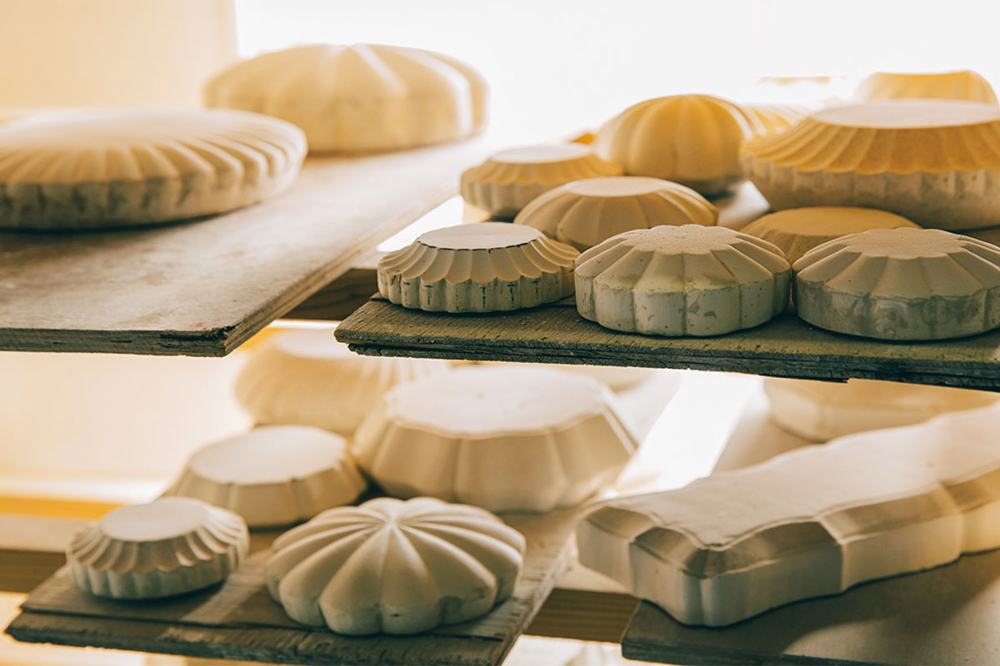
Возрождение
Белые лепестки по гипсовой форме
В 2015 году, примерно через двести лет после того, как печь остыла, местные гончары возродили усуки-яки. Среди старой посуды больше всего было белого фарфора мастеров из Симабары с краем в форме цветка. С него и начали: первой стала серия белых чаш и тарелок с волнистым краем.
Её делают способом «катауси». Тонко раскатанную массу накладывают на гипсовую форму и прижимают руками, и посуда принимает очертания цветка с лепестками или повторяет узор, вырезанный в форме. По сравнению с литьём, когда в форму заливают жидкую глину, вещь сохраняет тепло ручной лепки.
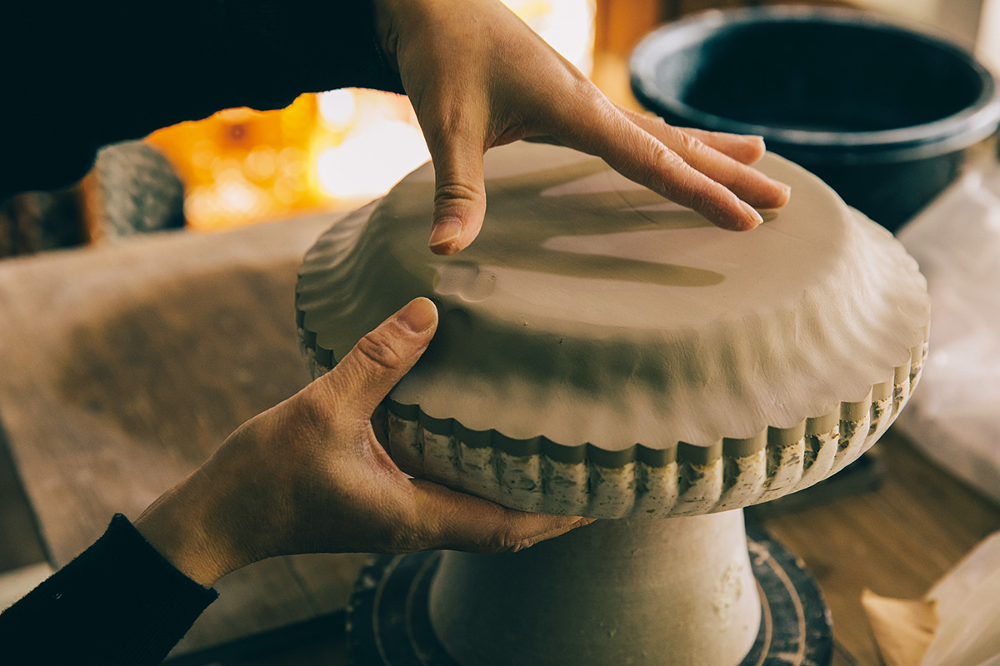
Во главе возрождения стоит гончар, который учился керамике в Осакском университете искусств. Его семья держит в Усуки центр для туристов у каменных Будд с рестораном, а сам он хотел привлечь в город людей. Он основал мастерскую USUKIYAKI, разбирал старые записи, ходил по домам Усуки, где хранилась посуда суэхиро-яки, и в итоге придумал её современную версию. Прежде главным мотивом была хризантема, а теперь появился и лотос: Усуки славится его цветением.
«Усуки знаменит лотосами, поэтому я сделал посуду с лотосом. Посмотрите, как ложится тень на белое»
гончар, возродивший усуки-яки
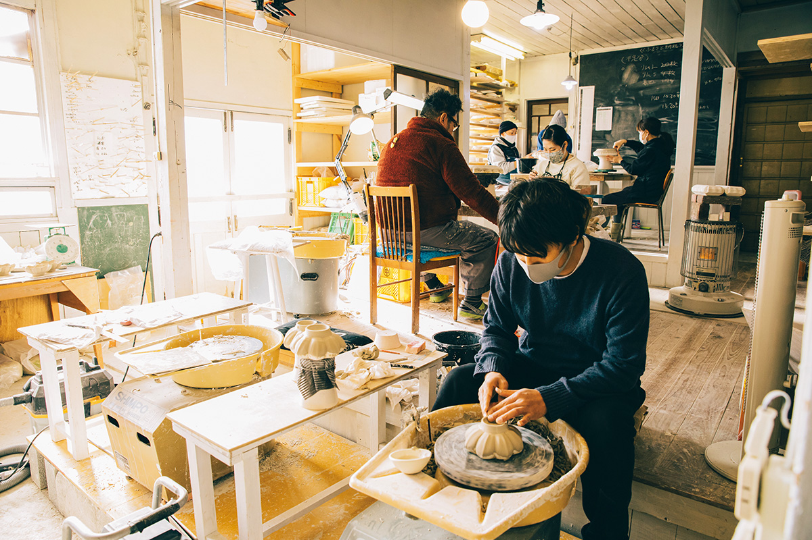
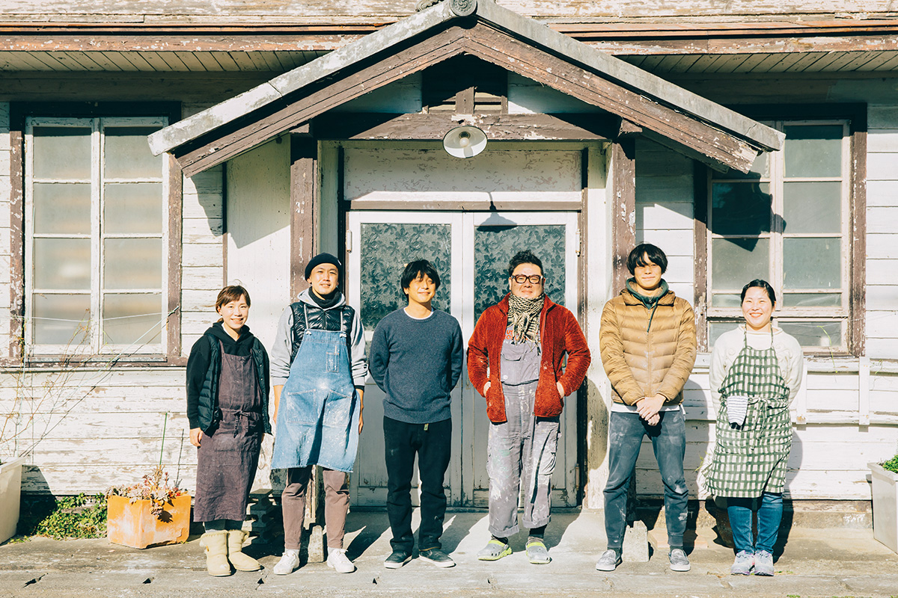
Хризантема и лотос это классические японские мотивы, но в посуде есть что-то европейское. Наверное, поэтому, как рассказывал гончар в 2021 году, её полюбили во Франции и Бельгии. Сам он считает, что посуда служит рамой для еды. Сегодня производство даёт работу примерно десятку мастеров и помогает учить молодых.
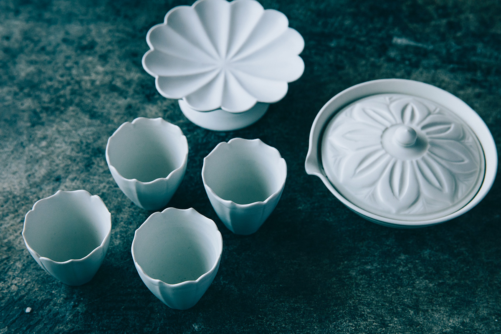
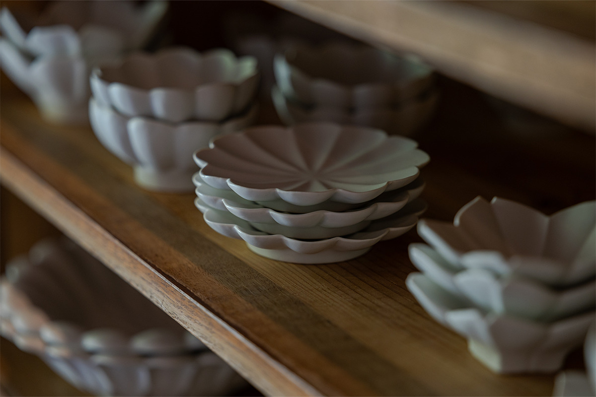
У усуки-яки есть и вторая сторона: рядом с фарфором здесь всегда делали глиняную керамику. В 2021 году её можно было лепить на занятиях в мастерской «Киттёму-мура когэйкан» в посёлке Ноцу, где учит местный гончар.
Обед
Овощи Усуки на белой посуде
Жена гончара готовит в ресторане «Кёдзэн Усами», который работает в туристическом центре у каменных Будд Усуки. Обед здесь строится на «хоммамон носамбуцу», местных овощах, выращенных без химии, и подают его на белой посуде усуки-яки, на которой цвет овощей виден особенно хорошо.
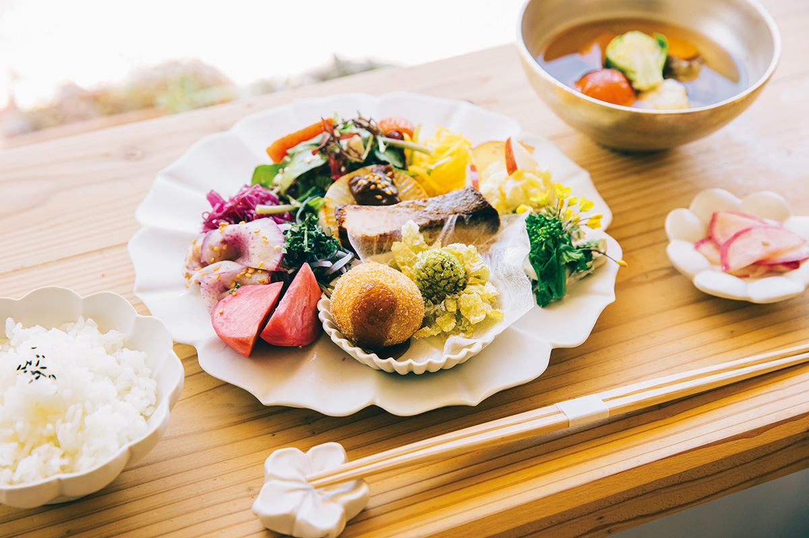
Сараяма
«Усуки Сараяма»: посуда, еда и искусство
В 2023 году супруги открыли «Усуки Сараяма», комплекс посуды и еды с мастерской и галереей. Здесь можно посмотреть, как делают усуки-яки, выбрать вещь для себя и поесть с этой посуды: жена гончара готовит блюда и сладости из местных органических овощей.
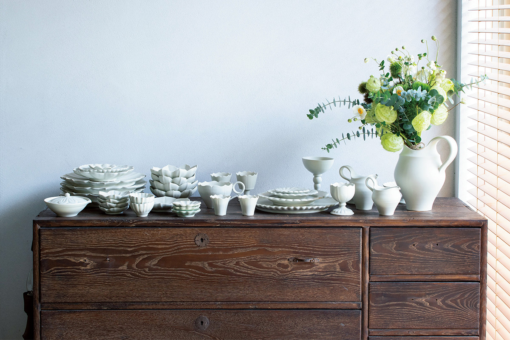
В кафе «Сараяма кисситсу» в чашках усуки-яки подают китайский чай. В галерее выставлены работы гончара, и сюда стоит заложить время, чтобы не спеша найти свою вещь.
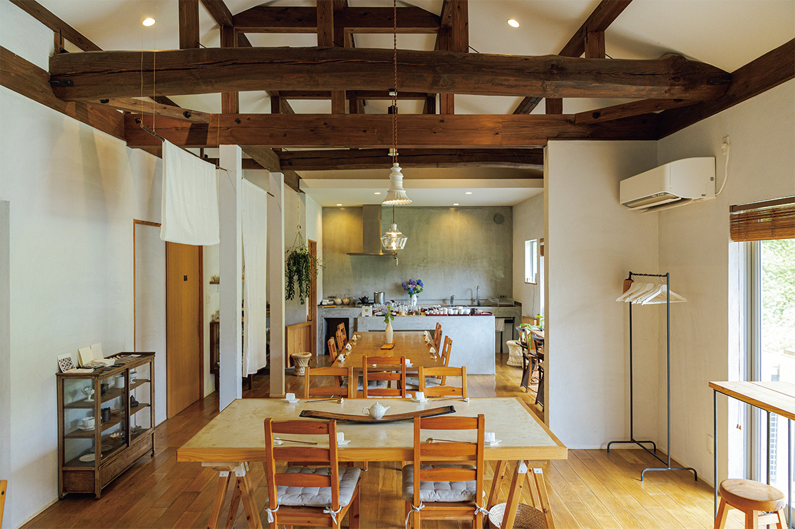
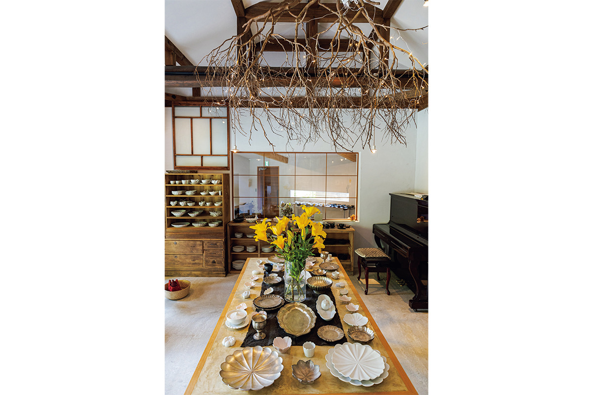
В 2024 году пара получила золотую премию в категории «еда» на конкурсе проектов, которые развивают туризм и города Кюсю: его проводит железнодорожная компания JR Kyushu. Члены жюри приезжали в «Усуки Сараяма» и слушали, как гончар читал старые записи и искал по домам Усуки уцелевшую посуду, а его жена рассказывала о своих блюдах.
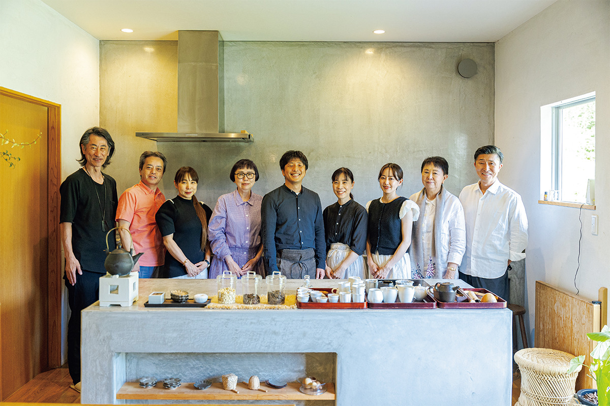
Мастер-классы
Сделать свою чашу
В углу мастерской можно попробовать себя в деле. На мастер-классе по формовке гость проходит весь путь вместе с мастерами: от прижимания массы к форме до кольцевой ножки на гончарном круге. Ещё есть занятие по кинцуги, когда сколотую посуду чинят лаком с золотом. В 2024 году формовка стоила от 3850 иен, кинцуги 11 000 иен.
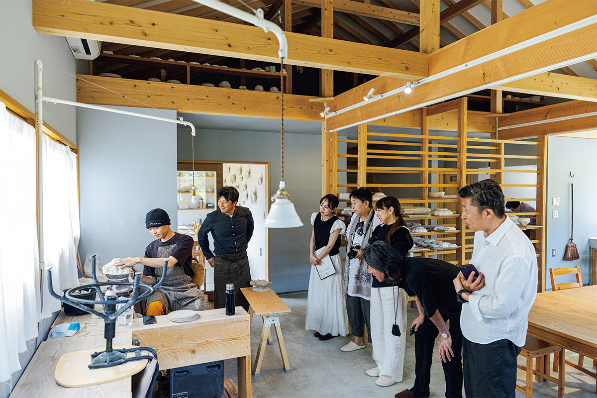
В магазине кроме усуки-яки продают сладости и вещи, которые отобрал сам гончар. А во внутреннем дворе стоит большая мандала, выложенная из тарелок и чаш усуки-яки разного размера: искусство в «Усуки Сараяма» встречается на каждом шагу.
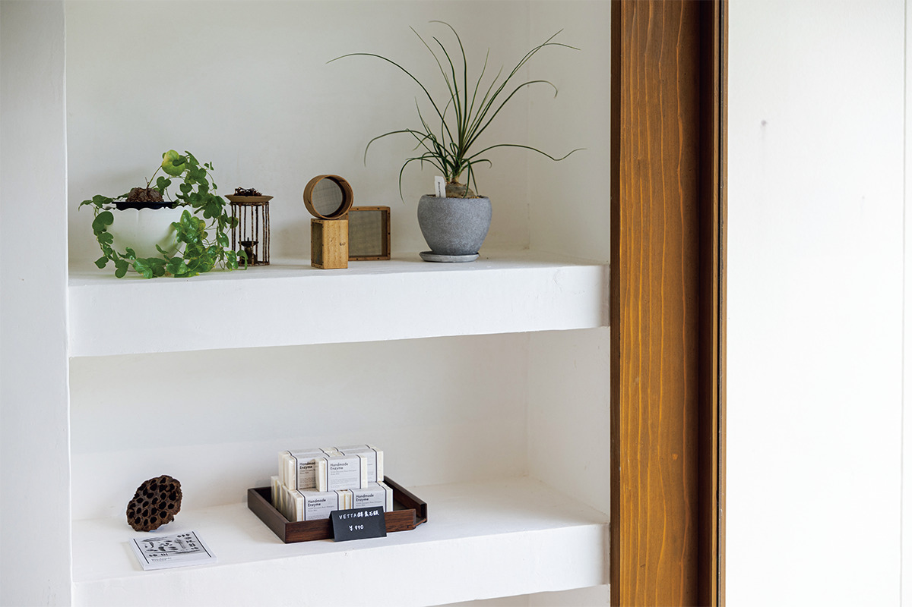
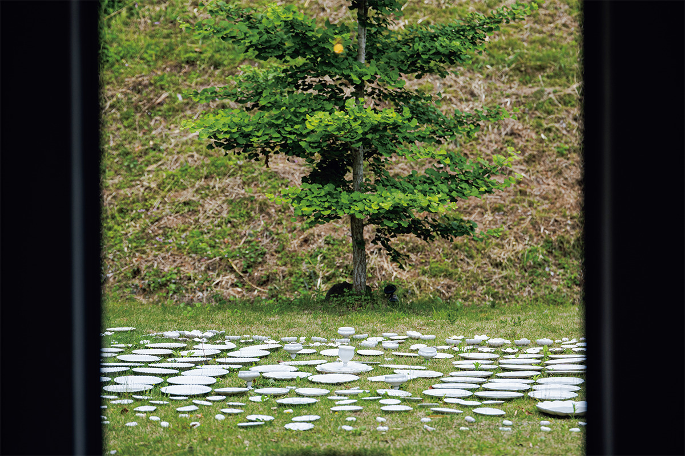
«Усуки Сараяма»
- Адрес
- префектура Оита, Усуки, Фуката, 816-3
- Телефон
- +81 972-65-3113
- Часы работы
- мастерская 10:00–16:00, галерея 11:30–16:00, кафе 11:30–16:00 (последний заказ 15:30)
- Выходные
- понедельник и вторник, бывают и другие нерабочие дни (если понедельник праздник, выходной в среду)
- Цены / Вход
- мастер-класс по формовке от 3850 иен, кинцуги 11 000 иен, нужна запись
- Сайт
- usukiyaki.com
«Кёдзэн Усами»
- Адрес
- префектура Оита, Усуки, Фуката, 833-5, в туристическом центре «Сэкибуцу канко сэнта»
- Телефон
- +81 972-65-3333
- Часы работы
- 11:00–14:30, продажа усуки-яки 10:00–16:30
- Выходные
- понедельник и вторник
Занятия глиняной керамикой в «Киттёму-мура когэйкан»
- Адрес
- префектура Оита, Усуки, Ноцу, Ноцуити, 238-1
- Телефон
- +81 90-7535-2562
- Часы работы
- 10:00–11:30, 14:00–15:30
- Выходные
- со вторника по субботу
- Цены / Вход
- от двух человек, запись не позже чем за 5 дней
Фото: Майко Фукуи, Хиромаса Оцука.